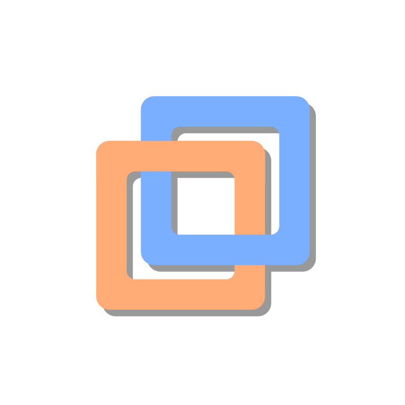
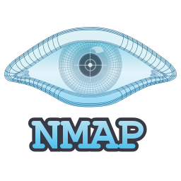
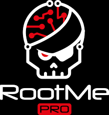

Développement Web
 CSS
CSS
 JS
JS
 Java
Java
 SQL
SQL
Étudiant en BTS SIO option SLAM, je présente ici mon parcours, mes compétences et mes projets.
Je m'appelle Azizi Othmane, j'ai 18 ans et je suis actuellement en première année de BTS SIO option SLAM à Rive-de-Gier. Au cours de ma formation, j'apprends à développer et à utiliser différents langages de programmation. J'ai déjà réalisé plusieurs projets en cours, ce qui m'a permis de mieux comprendre le développement et de progresser. J'aime chercher des solutions quand je suis face à un problème et essayer d'améliorer mon code. À travers ce portfolio, je présente les projets que j'ai réalisés ainsi que les compétences que je développe au fur et à mesure de ma formation.
CSS
JS
Java
SQL
 Git
Git
 GitHub
GitHub
 VS Code
VS Code

VMware Proxmox
Nmap Cisco Packet Tracer
Root-meStage chez Nidek SA du 18/05/2026 au 03/07/2026
NIDEK SA est la filiale française du groupe japonais spécialisé dans les équipements et technologies au service de la santé visuelle. Avec plus de 130 intervenants sur le territoire, ils accompagnent les ophtalmologistes, opticiens, orthoptistes, professionnels de l'optique et les établissements de santé.
MOOC SecNumAcadémie
CNIL RGPD
FreeCodeCamp - en cours
Workflow en entreprise